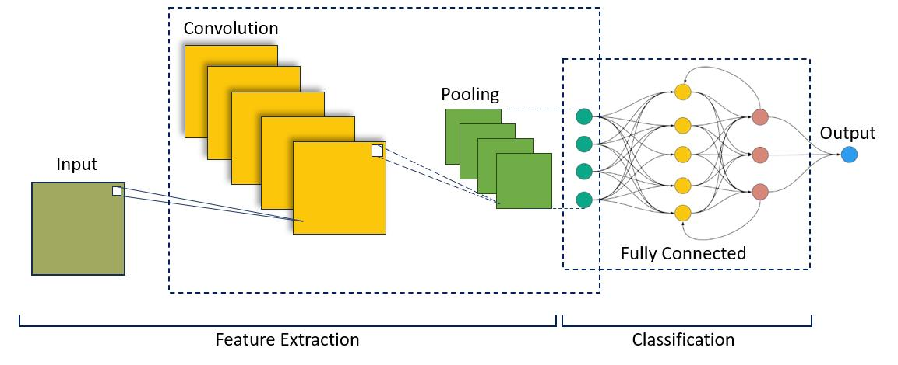
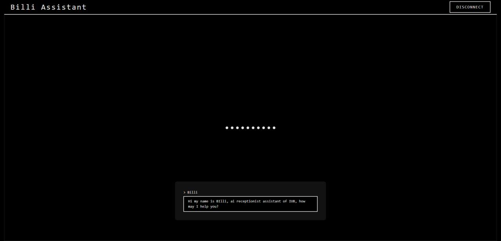
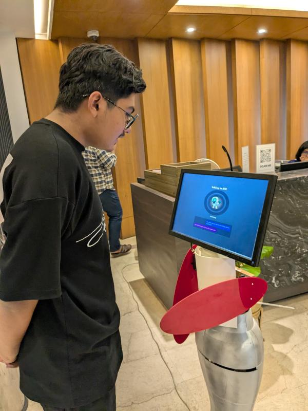

Research & Robotics · Independent University, Bangladesh
BILI: A Bilingual, Dialect-Aware Reception Assistant Robot
Bangla has close to 300 million speakers, but almost every voice assistant built for it only understands one version of it — the "standard" dialect taught in schools and used in news broadcasts. Walk into a university reception desk in Bangladesh speaking Chittagonian, Sylheti, or Rangpuri instead, and most digital systems simply stop understanding you. That gap — not a lack of technology, but a lack of technology that actually listens — is what BILI was built to close.
The idea, half-jokingly, started with JARVIS — the AI from Iron Man that just talks to you, in your own way, without a menu or a keyword to memorize. BILI is our attempt at a version of that for a Bangladeshi university reception desk: something with actual personality, that understands English, standard Bangla, and regional dialects, and answers back in whichever one you spoke to it in.
Getting there meant solving the dialect problem before anything else. We trained a custom CNN–BiLSTM model on MFCC audio features — the same acoustic fingerprints that make one accent sound different from another — and got it to 96.8% accuracy at identifying which of several Bangla dialects a speaker was using. Once BILI knows the dialect, it switches the speech-to-text model to match it, which cut word error rate by as much as 47% for dialects like Chittagonian that standard Bangla ASR systems badly mishandle.
From there, the rest of the conversation had to feel natural, not scripted. An NLU layer pulls out what the person actually wants — the intent and the specific details — and checks it against a local knowledge base of university information served through a Flask backend, so answers come back fast without depending on the internet. The reply then goes back out through text-to-speech in the same dialect the question came in, so the whole exchange stays in the speaker's own voice, not a generic one.
BILI now runs as a real reception assistant — on a screen, and mounted on a physical robot people can walk up to and talk with — at Independent University, Bangladesh. Beyond the demo itself, the project produced open audio and text datasets for Bangla dialects that other researchers can build on, which is where the BRADS and BRWDS datasets on this site came from. The published research behind it is in my Publications section.
How It Works


